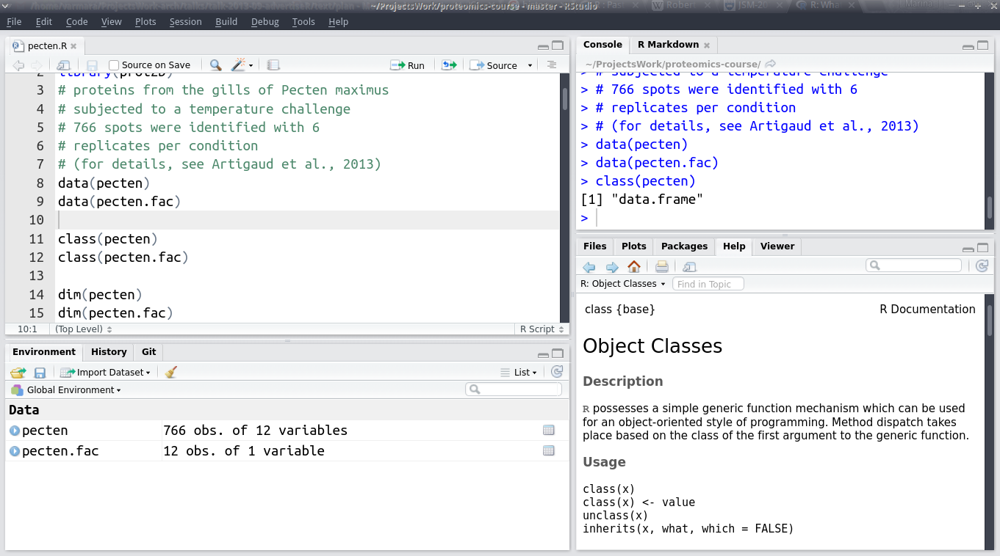
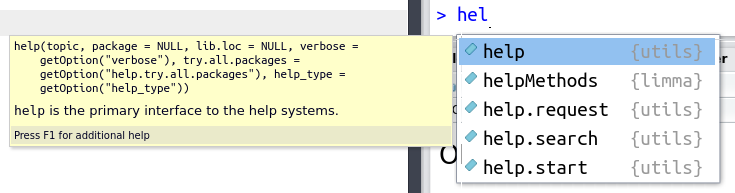
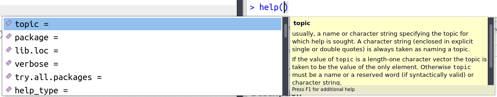
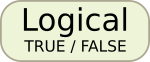
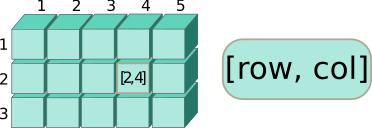
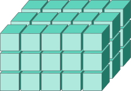
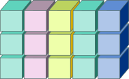

Знакомство с R
Марина Варфоломеева
Как появился R
R (R Core Team 2017) — это язык для статистического анализа и визуализации данных. Он возник как ответвление языка S/Splus, разработанного еще в 70-х годах в Bell Laboratories.

Росс Ихака (Ross Ihaka) и Роберт Джентльмен (Robert Gentleman), молодые ученые из университета Окленда, Новая Зеландия разработали R в 1993 году (Ihaka 1998).
Роберт Джентльмен и Росс Ихака, источник: Росс Ихака
Сейчас Росс Ихака занимается статистикой в университете Окленда (Associate Professor). В 2010 году Ихака начал работать над новым языком с целью усовершенствовать R и улучшить его быстродействие (Ihaka 2010).

Росс Ихака, источник: сайт university of Waikato
Роберт Джентльмен работал как ученый и эксперт в нескольких компаниях биотехнологического и генетического профиля, и недавно стал вицепрезидентом компании 23andMe как эксперт в биоинформатике. Еще в 2001 году Роберт Джентльмен начал работать над проектом Bioconductor.


Роберт Джентльмен, источник: Susie Fitzhugh
Среда разработки RStudio
RStudio (RStudio Team 2015) — это свободно распространяемая среда для разработки (integrated development environment) на языке R.

RStudio была основана в 2009 году американским программистом и интернет-предпринимателем Джозефом Аллером (Joseph J. Allaire). Среду RStudio можно устанавливать на компьютеры с разными операционными системами (Windows, OS X, and Linux).

Джозеф Аллер, источник: Hubert Burda Media on Flickr
Сейчас RStudio, пожалуй, самый удобный вариант среды для разработки на R. Мне кажется, что бум использования R в начале 10-х годов отчасти объясняется тем, что писать программы стало гораздо удобнее благодаря появлению среды RStudio.
К слову, вторая причина роста популярности R — это появление графического пакета ggplot2 (Wickham 2009), написанного Хедли Викхемом (Hadley Wickham). Этот пакет во много раз облегчил построение сложных и красивых графиков. С тех пор Хедли Викхем написал еще много полезных пакетов и сейчас работает Chief Scientist в RStudio и Adjunct Professor в университете Окленда.
Хедли Викхем, источник: Hadley Wickham
Для работы над этим курсом вам понадобится установить
Как выглядит RStudio

Окно редактора RStudio разделено на 4 области:
- код (зеленый прямоугольник на схеме) - это обычный текстовый редактор, в котором открывают и редактирут файлы с программами.
- консоль/RMarkdown (оранжевый прямоугольник на схеме). На вкладке консоль можно в живом режиме выполнять команды R, если вы не хотите их сохранять в виде программы.
- файлы/графики/пакеты/помощь/просмотр (желтый прямоугольник на схеме). На вкладке помощь можно просматривать файлы справки. На вкладке графики будут появляться графики. На вкладке файлы расположен файловый менеджер, который позволяет перемещаться по директориям вашего проекта и компьютера.
- среда/история (и еще может быть /Git, если ваш проект под контролем версий) (синий прямоугольник на схеме). На вкладке история есть список всех выполненных команд R. На вкладке среда расположен список объектов, находящихся в памяти.

Способы установки пути к рабочей директории (working directory)
- Выберите в меню
Session->Set working Directory...->To Source File Location(Если вы уже сохранили код). - На вкладке
Filesв одной из рабочих областейRStudioвыберите многоточие...-> в открывшемся системном диалоге выбора файлов найдите директорию, в которой лежит ваш код и нажмите OK - Можно вручную прописать путь к рабочей директории в кавычках в качестве аргумента функции
setwd()setwd("/media/data/proteomics")
Как можно получить помощь в R
- В
RStudioможно поставить курсор на название функции и нажатьF1
setwd()
- Перед названием функции можно напечатать знак вопроса и выполнить эту строку
?setwd
- Можно воспользоваться функцией
help()
help("setwd")
Все файлы справки состоят из нескольких типов разделов.

Полезные клавиатурные сокращения в RStudio:
Ctrl + Shift + C- закомментировать/раскомментировать выделенный фрагмент кода.Ctrl + Enter- отправляет строку из текстового редактора в консоль, а если выделить несколько строк, то будет выполнен этот фрагмент кода.TabилиCtrl + Space- нажмите после того как начали набирать название функции или переменной, и появится список автоподстановки. Это помогает печатать код быстро и с меньшим количеством ошибок.
Автоподстановка названий функций начинает работать как только вы ввели несколько первых букв названия функции. Вы можете вызвать ее раньше, если нажмете Tab или Ctrl + Space.

Как только вы полностью ввели название функции и скобки, RStudio автоматически ставит закрывающую скобку и показывает раздел справки Usage для этой функции.

Если вы нажмете Tab или Ctrl + Space, когда курсор находится внутри скобок, то вам покажут список аргументов этой функции с расшифровками их значений из раздела справки Arguments для этой функции.

Основы языка R
Математические операции
2 + 3## [1] 536 / 2## [1] 187 * 4## [1] 285 ^ 2## [1] 25Для некоторых операций есть специальные функции:
sqrt(27)## [1] 5.196152Предупреждения и ошибки (warnings and errors)
Предупреждения
sqrt(-27)## Warning in sqrt(-27): NaNs produced## [1] NaNОшибки
# sqr(27)Error: could not find function "sqr"Переменные (variables)
Можно сохранить результат любого вычисления или любую величину в переменной. Переменные - это такие контейнеры, в которые можно положить разные данные (и даже функции).
Оператор присваивания это символ стрелочки <- Он работает справа налево, это значит, что значение выражения в его правой части присваивается объекту в левой части. Есть еще более экзотический оператор присваивания слева направо ->, но его не рекомендуют использовать оттого, что хуже читается код.
Имена переменных могут содержать латинские буквы обоих регистров, символы точки . и подчеркивания _ , а так же цифры. Имена переменных должны начинаться с латинских букв. Создавайте понятные и “говорящие” имена переменных.
num_1 <- 1024 / 2
num_1## [1] 5121238 * 3 -> num_2 # экзотический вариант
num_2## [1] 3714Правила именования переменных
Просто a — плохо, и даже b, с, или х. Но в некоторых случаях название из одной буквы вполне допустимо:)
var1— плохо, но уже лучшеvar_1— тоже плохо, но уже лучшеshelllength— говорящее, но плохо читаетсяshell_length,wing_colourилиleg_num— хорошие, говорящие, короткие, но вполне читабельные названия.
Типы данных в R
В R всего шесть различных типов данных. Но нам пригодятся только некоторые из них.

Числовые данные
Мы только что их видели.
По умолчанию используется тип numeric, который позволяет хранить целые и дробные числа.

Есть еще тип integer, который предназначен для хранения целых чисел.

И, наконец, тип complex используется для хранения комплексных чисел.
Текстовые данные (character)
Текстовые данные используются для хранения последовательностей символов произвольной длины.

Каждый текстовый элемент должен быть окружен кавычками - двойными или одинарными
"это текст"## [1] "это текст"'это тоже текст'## [1] "это тоже текст"Логические данные (logical)
Логические данные используются для записи значений типа истина/ложь.

В R определены две логические константы: TRUE и FALSE
TRUE # истина## [1] TRUEFALSE # ложь## [1] FALSEДля ленивых — если вы вдруг очень спешите, то можно сокращать первыми заглавными буквами. Но лучше так не делать, чтобы читать программы было легче.
T## [1] TRUEF## [1] FALSEСырые данные (raw)
Тип raw используется для хранения “сырых” последовательностей байтов. Это очень экзотический тип, нам он не пригодится.

Встроенные в R константы
В R есть несколько встроенных констант. Нам пригодятся только несколько из них.

NA
NA — англ “not available”. Когда объект был, но его свойство не измерили или не записали.
Что произойдет с NA при различных операциях?
NA + 2## [1] NANA * 0## [1] NANA / 0## [1] NAsqrt(NA)## [1] NAInf
Inf — “infinity” — бесконечность
Вы увидите Inf при делении чисел на ноль,
1 / 0## [1] InfNAN
NaN — “not a number”
NaN получится при делении нуля на ноль, или если взять корень из отрицательного числа.
0 / 0## [1] NaNsqrt(-1)## Warning in sqrt(-1): NaNs produced## [1] NaNNULL
NULL — ноль, т.е. это значит “пусто”, “ничего нет”.
Основные структуры данных в R
Данные в R можно хранить в виде разных объектов: вектор, матрица, массив, список, датафрейм. Мы бегло рассмотрим только некоторые из них.
Векторы (vectors)
Основной объект R - векторы. Векторы - один объект, внутри которого может быть одно или несколько значений. Главное, чтобы эти значения относились к одному и тому же типу данных.

Вам могло показаться, что в результате выполнения следующих команд получаются просто числа:
23## [1] 23sqrt(25)## [1] 5но на самом деле, это векторы единичной длины. В R можно легко создавать векторы большей длины.
Создание векторов из произвольных элементов
Функция c() — от англ. concatenate. Функция c принимает несколько (произвольное количество) аргументов, разделенных запятыми, и собирает из них вектор (см. справку ?c). Когда используете функцию c(), следите, чтобы было английское “си”, а не русское “эс”.
c(2, 4, 6)## [1] 2 4 6c(-9.3, 0, 2.17, 21.3)## [1] -9.30 0.00 2.17 21.30Векторы можно хранить в переменных для последующего использования.
vect_num <- c(2, 4, 6, 8, 10, 12, 14, 16)
vect_num_1 <- c(1.3, 1.7, NA, 0.9, 1.6, 1.4)При помощи функции c() можно объединять несколько векторов в один вектор.
c(1, 1, 5:9)## [1] 1 1 5 6 7 8 9c(vect_num, vect_num_1)## [1] 2.0 4.0 6.0 8.0 10.0 12.0 14.0 16.0 1.3 1.7 NA 0.9 1.6 1.4c(100, vect_num)## [1] 100 2 4 6 8 10 12 14 16Вектора могут содержать не только числа, но и логические значения, текст.
c(TRUE, TRUE, TRUE, FALSE, FALSE, TRUE)## [1] TRUE TRUE TRUE FALSE FALSE TRUEcolours <- c("red", "orange", "yellow", "green", "blue", "violet")В R есть встроенные константы, которые помогают быстро генерировать искуственные текстовые векторы (см. ?Constants).
LETTERS## [1] "A" "B" "C" "D" "E" "F" "G" "H" "I" "J" "K" "L" "M" "N" "O" "P" "Q"
## [18] "R" "S" "T" "U" "V" "W" "X" "Y" "Z"letters## [1] "a" "b" "c" "d" "e" "f" "g" "h" "i" "j" "k" "l" "m" "n" "o" "p" "q"
## [18] "r" "s" "t" "u" "v" "w" "x" "y" "z"month.abb## [1] "Jan" "Feb" "Mar" "Apr" "May" "Jun" "Jul" "Aug" "Sep" "Oct" "Nov"
## [12] "Dec"month.name## [1] "January" "February" "March" "April" "May"
## [6] "June" "July" "August" "September" "October"
## [11] "November" "December"Создание векторов из целых чисел подряд
Оператор : используется для создания целочисленных векторов, где значения следуют одно за другим без пропусков
1:10 # от одного до 10## [1] 1 2 3 4 5 6 7 8 9 10-5:3 # от -5 до 3## [1] -5 -4 -3 -2 -1 0 1 2 3Создание векторов из повторяющихся элементов
Чтобы создавать длинные векторы из повторяющихся элементов, можно использовать функцию rep()
?rep
rep(x = 1, times = 3) # 1 повторяется 3 раза## [1] 1 1 1rep(x = "red", times = 5) # "red" повторяется 5 раз## [1] "red" "red" "red" "red" "red"rep(x = TRUE, times = 2) # TRUE повторяется 2 раза## [1] TRUE TRUEНазвания аргументов функций в R можно не указывать, если вы используете аргументы в том же порядке, что прописан в help к этой функции.
rep(TRUE, 5) # TRUE повторяется 5 раз, аргументы без названий## [1] TRUE TRUE TRUE TRUE TRUEСоздаем логический вектор, где TRUE повторяется 3 раза, FALSE 3 раза и TRUE 4 раза. Результат сохраняем в переменной vect_log.
vect_log <- c(rep(TRUE, 3), rep(FALSE, 3), rep(TRUE, 4))
vect_log## [1] TRUE TRUE TRUE FALSE FALSE FALSE TRUE TRUE TRUE TRUEАдресация внутри векторов
При помощи оператора [], мужно обратится к некоторым элементам вектора.

В квадратных скобках вам нужно указать порядковые номера элементов вектора, которые вы хотите добыть — один или несколько.
vect_num # весь вектор## [1] 2 4 6 8 10 12 14 16vect_num[1] # первый элемент## [1] 2vect_num[3] # 3-й элемент## [1] 6Если вам нужно несколько элементов, то их нужно указать в квадратных скобках их порядковые номера в виде вектора.
colours # весь вектор## [1] "red" "orange" "yellow" "green" "blue" "violet"colours[3:5] # 3-5 элемент## [1] "yellow" "green" "blue"LETTERS[1:3]## [1] "A" "B" "C"Аналогично, если вам нужны элементы не подряд, то укажите в квадратных скобках вектор с номерами элементов, который вы создали при помощи функции c().
vect_num[c(2, 4, 6)]## [1] 4 8 12colours[c(1, 6)]## [1] "red" "violet"month.name[c(12, 1, 2)]## [1] "December" "January" "February"Вектор — одномерный объект. У его элементов только один порядковый номер (индекс). Поэтому при обращении к элементам вектора нужно указывать только одно число или один вектор с адресами. R выдаст ошибку, если при обращении к вектору, вы не создавали вектор, а просто перечислили номера элементов через запятую.
vect_num[2, 4, 6]Error in vect_num[2, 4, 6] : incorrect number of dimensionscolours[1, 6]Error in colours[1, 6] : incorrect number of dimensionsЕсли попытаться добыть из вектора номер элемента, которого там точно нет, то R выдаст NA, потому, что такого элемента нет
vect_num[198]## [1] NAletters[33]## [1] NAmonth.name[13]## [1] NAВекторизованные операции
Поэкспериментируем с векторами. Проверим, как работают арифметические операции
vect_num + 2## [1] 4 6 8 10 12 14 16 18vect_num * 2## [1] 4 8 12 16 20 24 28 32vect_num * (-2)## [1] -4 -8 -12 -16 -20 -24 -28 -32vect_num ^2## [1] 4 16 36 64 100 144 196 256Матрицы (matrices)
Матрицы — это двумерные объекты, похожие на таблицы, в которых хранятся данные только одного определенного типа.

Матрицы создают при помощи функции matrix(), которой нужно передать вектор с данными и размер будущей матрицы (число строк или столбцов).
# Матрица с числовыми данными
matrix(data = 1:12, nrow = 4)## [,1] [,2] [,3]
## [1,] 1 5 9
## [2,] 2 6 10
## [3,] 3 7 11
## [4,] 4 8 12# Матрица с текстовыми данными
matrix(data = LETTERS[1:12], ncol = 6)## [,1] [,2] [,3] [,4] [,5] [,6]
## [1,] "A" "C" "E" "G" "I" "K"
## [2,] "B" "D" "F" "H" "J" "L"Обычно элементы записываются в матрицу столбцами
matrix(data = 1:6, ncol = 3)## [,1] [,2] [,3]
## [1,] 1 3 5
## [2,] 2 4 6Порядок заполнения матрицы элементами можно изменить, если указать byrow = TRUE.
matrix(data = 1:6, ncol = 3, byrow = TRUE)## [,1] [,2] [,3]
## [1,] 1 2 3
## [2,] 4 5 6Адресация в матрицах
Поскольку матрицы — это двумерные объекты, позиции элементов в них можно описать при помощи двух индексов, в отличие от векторов. Первым в квадратных скобках следует номер строки, вторым — номер столбца

mat <- matrix(data = LETTERS[1:12], ncol = 3)
mat## [,1] [,2] [,3]
## [1,] "A" "E" "I"
## [2,] "B" "F" "J"
## [3,] "C" "G" "K"
## [4,] "D" "H" "L"mat[3, 2]## [1] "G"mat[1, ]## [1] "A" "E" "I"mat[, 3]## [1] "I" "J" "K" "L"mat[, -1]## [,1] [,2]
## [1,] "E" "I"
## [2,] "F" "J"
## [3,] "G" "K"
## [4,] "H" "L"mat[1:3, c(1, 3)]## [,1] [,2]
## [1,] "A" "I"
## [2,] "B" "J"
## [3,] "C" "K"Массивы (arrays)
Массивы — это многомерные объекты, в которых можно хранить данные одного и того же типа. По структуре они очень похожи на матрицы

ar <- array(data = 1:24, dim = c(2, 4, 3))
ar## , , 1
##
## [,1] [,2] [,3] [,4]
## [1,] 1 3 5 7
## [2,] 2 4 6 8
##
## , , 2
##
## [,1] [,2] [,3] [,4]
## [1,] 9 11 13 15
## [2,] 10 12 14 16
##
## , , 3
##
## [,1] [,2] [,3] [,4]
## [1,] 17 19 21 23
## [2,] 18 20 22 24Адресация в массивах
Адреса в массивах указываются в том же порядке: сначала идет строка, за ней столбец, затем следуют прочие измерения.

ar[1, 2, 3]## [1] 19ar[, , 1]## [,1] [,2] [,3] [,4]
## [1,] 1 3 5 7
## [2,] 2 4 6 8ar[, 1, ]## [,1] [,2] [,3]
## [1,] 1 9 17
## [2,] 2 10 18ar[1, , ]## [,1] [,2] [,3]
## [1,] 1 9 17
## [2,] 3 11 19
## [3,] 5 13 21
## [4,] 7 15 23ar[1, 1:3, 1]## [1] 1 3 5ar[, , -1]## , , 1
##
## [,1] [,2] [,3] [,4]
## [1,] 9 11 13 15
## [2,] 10 12 14 16
##
## , , 2
##
## [,1] [,2] [,3] [,4]
## [1,] 17 19 21 23
## [2,] 18 20 22 24Датафреймы (data frames)
Датафреймы — это такие двумерные таблицы, в которых столбцы могут содержать данные разных типов.

x <- 1:4
y <- LETTERS[1:4]
z <- c(TRUE, TRUE, FALSE, TRUE)
dat <- data.frame(v1 = x, v2 = y, v3 = z, stringsAsFactors = FALSE)
dat## v1 v2 v3
## 1 1 A TRUE
## 2 2 B TRUE
## 3 3 C FALSE
## 4 4 D TRUEАдресация в датафреймах
Чтобы вытащить фрагмент датафрейма, можно использовать несколько вариантов действий.
Во-первых, оператор [] работает с датафреймами точно так же как и с матрицами.

dat[2, 2]## [1] "B"На месте индекса столбцов в [] квадратных скобках можно указать вектор имен переменных вместо их номеров.
dat[, c("v1", "v3")]## v1 v3
## 1 1 TRUE
## 2 2 TRUE
## 3 3 FALSE
## 4 4 TRUEВо-вторых, оператор $ позволяет выбрать одну из переменных по имени
dat$v1## [1] 1 2 3 4Можно использовать комбинацию предыдущих техник.
dat$v3[3]## [1] FALSEСписки (lists)
Списки позволяют хранить данные различных типов, и при этом разной длины.

list(dat, mat, vect_num, colours)## [[1]]
## v1 v2 v3
## 1 1 A TRUE
## 2 2 B TRUE
## 3 3 C FALSE
## 4 4 D TRUE
##
## [[2]]
## [,1] [,2] [,3]
## [1,] "A" "E" "I"
## [2,] "B" "F" "J"
## [3,] "C" "G" "K"
## [4,] "D" "H" "L"
##
## [[3]]
## [1] 2 4 6 8 10 12 14 16
##
## [[4]]
## [1] "red" "orange" "yellow" "green" "blue" "violet"Можно создавать именованные списки
lst <- list(Dfr = dat, Matr = mat, Vect1 = vect_num, Vect2 = colours)
lst## $Dfr
## v1 v2 v3
## 1 1 A TRUE
## 2 2 B TRUE
## 3 3 C FALSE
## 4 4 D TRUE
##
## $Matr
## [,1] [,2] [,3]
## [1,] "A" "E" "I"
## [2,] "B" "F" "J"
## [3,] "C" "G" "K"
## [4,] "D" "H" "L"
##
## $Vect1
## [1] 2 4 6 8 10 12 14 16
##
## $Vect2
## [1] "red" "orange" "yellow" "green" "blue" "violet"Кстати, датафрейм можно определить как список векторов одинаковой длины.
Адресация в списках
Для выбора данных из списков существует несколько вариантов действий.
- Хорошо нам знакомый оператор
[]работает и со списками. Он позволяет извлечь элементы списков в виде списков.
lst[1:2] # список из двух элементов## $Dfr
## v1 v2 v3
## 1 1 A TRUE
## 2 2 B TRUE
## 3 3 C FALSE
## 4 4 D TRUE
##
## $Matr
## [,1] [,2] [,3]
## [1,] "A" "E" "I"
## [2,] "B" "F" "J"
## [3,] "C" "G" "K"
## [4,] "D" "H" "L"lst[1] # список из одного элемента## $Dfr
## v1 v2 v3
## 1 1 A TRUE
## 2 2 B TRUE
## 3 3 C FALSE
## 4 4 D TRUE- Чтобы извлечь содержимое элемента списка, нужно использовать двойные квадратные скобки
[[]]. С элементом списка дальше можно производить любые действия в обычном порядке.
lst[[1]]## v1 v2 v3
## 1 1 A TRUE
## 2 2 B TRUE
## 3 3 C FALSE
## 4 4 D TRUElst[[1]]$v2## [1] "A" "B" "C" "D"- При помощи оператора
$можно извлечь элементы из именованного списка по их именам. Дальше с этими элементами можно проводить любые манипуляции.
lst$Vect1## [1] 2 4 6 8 10 12 14 16lst$Matr[, 1]## [1] "A" "B" "C" "D"Факторы (factors) — особый тип данных
Факторы - это способ хранения дискретных (= категориальных данных). Например, если вы поймали 10 улиток и посмотрели их цвет. У большого количества улиток небольшое счетное количество возможных цветов.
snail_colours <- c("red", "green", "green", "green", "yellow", "yellow", "yellow", "yellow")
snail_colours # это текстовый вектор.## [1] "red" "green" "green" "green" "yellow" "yellow" "yellow" "yellow"Но цвет “желтый” обозначает одно и то же для каждой из улиток. Поэтому в целях экономии места можно записать цвета этих улиток в виде вектора, в котором численным значениям будут сопоставлены “этикетки” (называются “уровни” - levels) - названия цветов. Мы можем создать “фактор” цвет улиток.
f_snail_alphabet <- factor(snail_colours)
f_snail_alphabet## [1] red green green green yellow yellow yellow yellow
## Levels: green red yellowУровни этого фактора: 1 - green, 2 - red, 3 - yellow. По умолчанию, R назначает порядок уровней по алфавиту. Можно изменить порядок (см. help("factor")). Нам это пригодится позже.
f_snail_ryg <- factor(snail_colours, levels = c("red", "yellow", "green"))
f_snail_ryg## [1] red green green green yellow yellow yellow yellow
## Levels: red yellow greenf_snail_yrg <- relevel(f_snail_ryg, ref = "yellow")
f_snail_yrg## [1] red green green green yellow yellow yellow yellow
## Levels: yellow red greenКак узнать, к какому классу структур данных относится содержимое переменной?
Для того, чтобы узнать к какой структуре данных относится переменная, можно воспользоваться функцией class()
class(f_snail_alphabet)## [1] "factor"class(vect_log)## [1] "logical"class(vect_num)## [1] "numeric"class(colours)## [1] "character"class(mat)## [1] "matrix"class(ar)## [1] "array"class(dat)## [1] "data.frame"class(lst)## [1] "list"Приведение (coercion), проверка принадлежности к классу/типу.
Приведение (coercion) — это преобразование объекта из одного типа данных в другой. Функции для конверсии называются по единому паттерну: as.имя_типа(). Функции для проверки называются is.имя_типа(). Аналогичные функции есть для принадлежности разным классам структур данных (as.имя_класса(), is.имя_класса()).
vect_num## [1] 2 4 6 8 10 12 14 16as.character(vect_num)## [1] "2" "4" "6" "8" "10" "12" "14" "16"vect_log## [1] TRUE TRUE TRUE FALSE FALSE FALSE TRUE TRUE TRUE TRUEas.numeric(vect_log)## [1] 1 1 1 0 0 0 1 1 1 1as.character(vect_log)## [1] "TRUE" "TRUE" "TRUE" "FALSE" "FALSE" "FALSE" "TRUE" "TRUE"
## [9] "TRUE" "TRUE"as.character(as.numeric(vect_log))## [1] "1" "1" "1" "0" "0" "0" "1" "1" "1" "1"as.numeric(as.character(vect_log))## Warning: NAs introduced by coercion## [1] NA NA NA NA NA NA NA NA NA NAis.character(vect_num)## [1] FALSEis.numeric(vect_num)## [1] TRUEis.logical(vect_log)## [1] TRUEis.vector(vect_log)## [1] TRUEis.matrix(vect_log)## [1] FALSEas.matrix(vect_log)## [,1]
## [1,] TRUE
## [2,] TRUE
## [3,] TRUE
## [4,] FALSE
## [5,] FALSE
## [6,] FALSE
## [7,] TRUE
## [8,] TRUE
## [9,] TRUE
## [10,] TRUEis.matrix(mat)## [1] TRUEis.array(dat)## [1] FALSEas.data.frame(mat)## V1 V2 V3
## 1 A E I
## 2 B F J
## 3 C G K
## 4 D H LФункции (functions)
Вы уже видели массу функций, их легко узнать по скобкам после ключевого слова.
Познакомимся еще с несколькими и научимся писать пользовательские функции. Пользовательские функции позволяют автоматизировать повторяющиеся действия и делают код легко читаемым.
Вспомним, как выглядят наши векторы
vect_num## [1] 2 4 6 8 10 12 14 16vect_num_1## [1] 1.3 1.7 NA 0.9 1.6 1.4Длину вектора можно вычислить при помощи функции length()
length(vect_num)## [1] 8length(vect_num_1)## [1] 6Сумму элементов вектора при помощи функции sum()
sum(vect_num)## [1] 72sum(vect_num_1)## [1] NAУпс! Почему-то получилось NA. Чтобы узнать, почему и как это исправить - посмотрите в help("sum"). Выяснится, что у функции sum() есть аргумент na.rm, который по умолчанию принимает значение FALSE, то есть NA не учитываются при подсчете суммы. Если мы передадим функции sum() аргумент na.rm = TRUE, то получится правильная сумма
sum(vect_num_1, na.rm = TRUE)## [1] 6.9Теперь давайте попробуем вручную посчитать среднее значение элементов в векторе vect_num_1 и положить его в переменную.
Осторожно! В знаменателе должна быть не просто длина вектора, а число элементов, которые не равны NA
a <- sum(vect_num_1, na.rm = TRUE) / (length(vect_num_1) - 1)
a## [1] 1.38Проверяем при помощи встроенной функции mean(). Она тоже не работает, если в векторе есть NA, но у нее тоже есть аргумент na.rm
mean(vect_num_1)## [1] NAmean(vect_num_1, na.rm = TRUE)## [1] 1.38Попробуем написать пользовательскую функцию my_mean(), которая будет по умолчанию считать среднее значение элементов в векторе с учетом пропущенных значений (NA)
my_mean <- function(x){
mean(x, na.rm = TRUE)
}В этом коде:
my_mean— переменная, название функции. В эту переменную мы складываем функцию, которую создает функцияfunction()function()— функция, которая делает функции. В скобках перечисляются аргументы (названия переменных, которые мы передаем в функцию, чтобы она что-то сделала с ними){ }— в фигурных скобках тело функции — последовательность действий, которую нужно сделать с аргументами
Иногда у функций бывает еще инструкция return(), которая сообщает, что именно должна возвращать наша функция. Вот как выглядела бы наша функция с этой инструкцией
my_mean <- function(x){
res <- mean(x, na.rm = TRUE)
return(res)
}Любую пользовательскую функцию нужно протестировать. Несмотря на то, что наша функция my_mean() очень простая и проверка будет выглядеть несколько натянуто, давайте проверим ее при помощи встроенной функции.
mean(vect_num, na.rm = TRUE)## [1] 9my_mean(vect_num)## [1] 9Наша функция работает правильно.
Установка дополнительных пакетов c CRAN и Bioconductor
Запустите RStudio (с правами администратора, если вы в Windows) и, для начала, установите несколько пакетов.
Пакеты можно установить при помощи функции install.packages() по одному:
install.packages("имя_пакета")Несколько имен пакетов можно объединить в вектор и установить при помощи одной команды. Если вдруг что-то не получится, то можно попробовать устанавливать пакеты по-одному, чтобы выяснить в чем проблема.
Нам понадобится несколько пакетов с CRAN (из базового репозитория R)
install.packages(c("ggplot2", "gplots", "fpc", "pvclust", "Hmisc"))Кроме того, нам понадобятся несколько пакетов из репозитория Bioconductor. Пакеты из этого репозитория устанавливают при помощи функции biocLite(), код которой выполняют прямо из интернета при помощи функции source(). Так же как install.packages() функция biocLite() может принимать в качестве аргумента вектор с названиями нескольких пакетов.
source("https://bioconductor.org/biocLite.R")
biocLite(c("Biobase", "prot2D", "impute", "pcaMethods", "limma"))Прочие пакеты для R будем устанавливать по мере необходимости.
Чтение данных из файлов
Чтение из текстовых файлов
Для чтения данных из текстовых файлов с разделителями существует масса функций, но все они — это модификации одной главной функции read.table(). У этой функции очень много аргументов, которые позволяют настроить ее для открытия самых разных типов текстовых файлов. О назначении аргументов можно узнать в файле справки ?read.table
В директории с данными лежит несколько файлов.
Если открыть в текстовом редакторе файл expression_3.csv, можно заметить, что в нем есть названия переменных в первой строке, отдельные столбцы отделены друг от друга запятыми, а десятичные разряды в числах — точками.

Чтобы открыть этот файл в R, можно выполнить команду:
dat <- read.table(file = "data/expression_3.csv", header = TRUE, sep = ",", dec = ".")- file — абсолютный или, как в данном случае, относительный (относительно рабочей директории) путь к файлу с данными.
- header — есть в файле заголовок или нет
- sep — разделитель столбцов
- dec — разделитель десятичных разрядов
Есть еще одна полезная опция
- stringsAsFactors — автоматически преобразовывать переменные с текстовыми значениями в факторы. По умолчанию ее значение TRUE, но это не всегда удобно. Сейчас мы не станем ею пользоваться, но просто будем помнить о такой возможности.
После открытия файла стоит убедится, все ли правильно прочитано.
head(dat)## X X1 X2 X3 X4 X5
## 1 1 0.7814702 0.466564038544439 0.9196198 1.2080542 1.661304
## 2 2 0.9113954 0.471713563732519 1.1503507 0.8128223 1.934507
## 3 3 1.0613039 0.599890221191235 0.8434016 0.8844307 1.893101
## 4 4 0.8278565 0.495471847477093 1.0653368 0.9210217 1.884009
## 5 5 0.8043413 0.489740774633650 1.0623114 1.0106327 1.480689
## 6 6 1.0145113 0.399992860034031 0.8525728 1.2007840 1.220451
## X6 X7 X8
## 1 0.589023300123506 0.7734419 0.7143289
## 2 0.585117486854568 0.6315635 0.5697395
## 3 0.624861083185558 0.8040159 0.7274658
## 4 0.637964490016918 0.7560546 0.6491424
## 5 0.638018474951418 0.7421269 0.7787694
## 6 0.506429298603763 0.9793544 0.2480020На первый взгляд, все выглядит хорошо, но не тут то было. Давайте проверим, правильно ли R определил классы переменных.
sapply(dat, class)## X X1 X2 X3 X4 X5 X6
## "integer" "numeric" "factor" "numeric" "numeric" "numeric" "factor"
## X7 X8
## "numeric" "numeric"Странным образом, столбцы X2 и X6 были преобразованы в факторы. Скорее всего, это произошло из-за того, что кроме цифр там встречались какие-то другие символы. В данном случае, мы точно знаем, что там должны быть только числа, поэтому принудительно преобразуем факторы в числа.
dat1 <- within(dat, {
X2 <- as.numeric(as.character(X2))
X6 <- as.numeric(as.character(X6))
}
)## Warning: NAs introduced by coercion
## Warning: NAs introduced by coercionR предупреждает нас о появлении NA. Теперь мы можем разобраться из-за чего это произошло. Отфильтруем те значения в старом датафрейме, на месте которых получились NA.
dat$X2[is.na(dat1$X2)]## [1] - - - -
## 2428 Levels: - 0.000000000000027 0.026564720945417 ... 6.065510976664640dat$X6[is.na(dat1$X6)]## [1] - -
## 2430 Levels: - 0.007018978560024 0.019494483558559 ... 7.855426527485190Видно, что в исходном файле пропущенные значения были обозначены “-”
Проверим, правильно ли определены типы переменных после преобразования.
sapply(dat1, class)## X X1 X2 X3 X4 X5 X6
## "integer" "numeric" "numeric" "numeric" "numeric" "numeric" "numeric"
## X7 X8
## "numeric" "numeric"Теперь все правильно
Чтение из архивированных файлов
unz() позволяет извлекать файлы из архивов. В том числе, если внутри архивов они лежат в своих директориях.
dat2 <- read.table(unz("./data/expression_3.zip", "expression_analysis/3.csv"), header=T, sep=",", stringsAsFactors = FALSE)
head(dat2)## X X1 X2 X3 X4 X5
## 1 1 0.7814702 0.466564038544439 0.9196198 1.2080542 1.661304
## 2 2 0.9113954 0.471713563732519 1.1503507 0.8128223 1.934507
## 3 3 1.0613039 0.599890221191235 0.8434016 0.8844307 1.893101
## 4 4 0.8278565 0.495471847477093 1.0653368 0.9210217 1.884009
## 5 5 0.8043413 0.489740774633650 1.0623114 1.0106327 1.480689
## 6 6 1.0145113 0.399992860034031 0.8525728 1.2007840 1.220451
## X6 X7 X8
## 1 0.589023300123506 0.7734419 0.7143289
## 2 0.585117486854568 0.6315635 0.5697395
## 3 0.624861083185558 0.8040159 0.7274658
## 4 0.637964490016918 0.7560546 0.6491424
## 5 0.638018474951418 0.7421269 0.7787694
## 6 0.506429298603763 0.9793544 0.2480020sapply(dat2, class)## X X1 X2 X3 X4 X5
## "integer" "numeric" "character" "numeric" "numeric" "numeric"
## X6 X7 X8
## "character" "numeric" "numeric"Дальше все те же самые манипуляции, что мы проделывали в прошлом разделе.
Чтение файлов Excel
Для чтения данных из файлов Excel мы будем использовать пакет readxl (Wickham 2016). При необходимости инсталлируйте его командой install.packages("readxl").
library(readxl)
dat3 <- read_excel(path = "data/expression_3.xlsx")## Warning in read_xlsx_(path, sheet, col_names = col_names, col_types =
## col_types, : [1450, 3]: expecting numeric: got '-'## Warning in read_xlsx_(path, sheet, col_names = col_names, col_types =
## col_types, : [1487, 3]: expecting numeric: got '-'## Warning in read_xlsx_(path, sheet, col_names = col_names, col_types =
## col_types, : [1490, 3]: expecting numeric: got '-'## Warning in read_xlsx_(path, sheet, col_names = col_names, col_types =
## col_types, : [1503, 3]: expecting numeric: got '-'## Warning in read_xlsx_(path, sheet, col_names = col_names, col_types =
## col_types, : [1514, 7]: expecting numeric: got '-'## Warning in read_xlsx_(path, sheet, col_names = col_names, col_types =
## col_types, : [1516, 7]: expecting numeric: got '-'В пакете readxl используется более совершенный алгоритм автоматического определения классов переменных. Нас предупреждают, что в некоторых переменных, которые должны быть числовыми, встретились неожиданные текстовые значения. Тем не менее, read_excel правильно импортирует данные, превращая “-” в NA
sapply(dat3, class)## 1 2 3 4 5 6
## "numeric" "numeric" "numeric" "numeric" "numeric" "numeric" "numeric"
## 7 8
## "numeric" "numeric"sum(is.na(dat3$`2`))## [1] 4sum(is.na(dat3$`6`))## [1] 2Но есть другая особенность. readxl пытается сохранить исходные названия переменных. В том числе пустое имя первого столбца с номерами пятен.
colnames(dat3)## [1] "" "1" "2" "3" "4" "5" "6" "7" "8"Мы можем создать свои собственные имена переменных.
new_names <- paste0("X", colnames(dat3))
colnames(dat3) <- new_namesСсылки
Ihaka, R. 1998. R: Past and future history. COMPUTING SCIENCE AND STATISTICS:392–396.
Ihaka, R. 2010. R: Lessons learned, directions for the future. in Joint Statistical Meetings. The Authors.
R Core Team. 2017. R: A language and environment for statistical computing. R Foundation for Statistical Computing, Vienna, Austria.
RStudio Team. 2015. RStudio: Integrated development environment for R. RStudio, Inc., Boston, MA, USA.
Wickham, H. 2009. Ggplot2: Elegant graphics for data analysis. Springer-Verlag New York.
Wickham, H. 2016. Readxl: Read excel files.
Proteomics course by Marina Varfolomeeva, Arina Maltseva